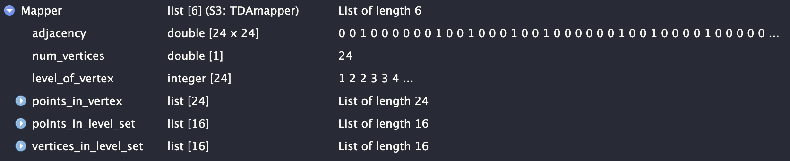
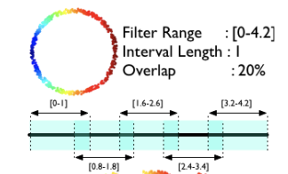

2 File Explain
2.1 MapperAlgo Params
MapperAlgo funtion remains several params, filter_values is the data you get after pojection, for example, the output of PCA. Intervals is how many areas you want, in the example below, you cut the data into 4 areas, and the 4 areas will be ovelapped in 30%, then it will calculate the width for you. You can also choose interval_width as input, but you can’t use it and Intervals at the same time because it will cause nonuniform intervals in space, vice versa.
You can choose hierarchical, kmeans, dbscan, or pam in methods, and according to their original package, you must input a list of params to method_params. Then, according to the original author and the paper, stride or extension in cover_type can be choose in the function, more informations are explained in File explaination. The num_cores can be set depend on how many cores you want to use for parrallel computing.
MapperPlotter is just plotting the nodes and edges, use forceNetwork if you want to interact with the plot, and ggraph could get you more informations in label. avg will give you the mean feature of each node if you set it as TRUE, in the example below, circle_data$circle is the feature.
time_taken <- system.time({
Mapper <- MapperAlgo(
filter_values = data[,1:4],
# filter_values = circle_data[,2:3],
percent_overlap = 30,
methods = "dbscan",
method_params = list(eps = 1, minPts = 1),
# methods = "hierarchical",
# method_params = list(num_bins_when_clustering = 10, method = 'ward.D2'),
# methods = "kmeans",
# method_params = list(max_kmeans_clusters = 2),
# methods = "pam",
# method_params = list(num_clusters = 2),
cover_type = 'stride',
# intervals = 4,
interval_width = 1,
num_cores = 12
)
})
time_taken2.1.1 Output data
| Name | Context |
|---|---|
| adjacency | 24x24 adjacency matrix, 0 or 1 |
| num_vertices | Mapper nodes num |
| level_of_vertex | Each node represent to which level set index, correspond to intervals. |
| Length 24 correspond to each node | |
| points_in_vertex | Each node carries original data index |
| points_in_level_set | Each level set(16) include data point index, level set represent data subset in a lens function |
| vertices_in_level_set | Which node represent to a level set |

2.2 File explanation
2.2.1 Cover
Calculate range function
| Method | stride |
extension |
|---|---|---|
| logic | fixed step length and stride: anchor = min + (lsmi - 1) × stride |
fixed width and extend: anchor = min + (lsmi - 1) × interval_width |
| overlap method | every stride: interval_width × (1 - overlap) |
fixed point and extend: ± 0.5 × interval_width × overlap |
| original design | Y (from paper) | N (from original author) |
# stride
stride <- interval_width * (1 - percent_overlap / 100)
anchor <- filter_min + (lsmi - 1) * stride
lsfmin <- anchor
lsfmax <- anchor + interval_width
# extension
anchor <- filter_min + (lsmi - 1) * interval_width
extension <- 0.5 * interval_width * percent_overlap / 100
lsfmin <- anchor - extension
lsfmax <- anchor + interval_width + extensionSo what’s the difference between stride(papers’) and extension(authors’), according to the original paper, there’s an example below:
- Filter Range: [0, 4.2]
- Interval Length: 1
- Overlap: 20%

We can easily calculate stride and other variables
# second interval using stride
stride = length × (1 - overlap)
= 1 × (1 - 0.2)
= 0.8
anchor = filter_min + (lsmi - 1) * stride
= 0 + (2 - 1) * 0.8 = 0.8
lsfmin = anchor
= 0.8
lsfmax = anchor + interval_width
= 0.8 + 1 = 1.8For example, The second interval range will be [0.8, 1.8], then you get 0.82, 0.83…. So the final intervals will be same as the original paper performed. But if you use the extension one, you got the different output, the second interval range is [0.9, 2.1], then by doing the same stuff, different anchor will change the intervals.
# second interval using extension
anchor = filter_min + (lsmi - 1) * interval_width
= 0 + (2 - 1) * 1
= 1
extension = 0.5 × interval_length × overlap
= 0.5 × 1 × 0.2 = 0.1
lsfmin = anchor - extension
= 1 - 0.1
= 0.9
lsfmax = anchor + interval_width + extension
= 1 + 1 + 0.1
= 2.12.3 ConvertLevelsets
This file convert flat index and multi index, the reason of converting index is to easily get the range of interval in high dimensional data
to_lsmi <- function(lsfi, num_intervals) {
# level set flat index (lsfi)
j <- c(1, num_intervals) # put 1 in front to make indexing easier in the product prod(j[1:k])
f <- c()
for (k in 1:length(num_intervals)) {
# use lsfi-1 to shift from 1-based indexing to 0-based indexing
f[k] <- floor((lsfi-1) / prod(j[1:k])) %% num_intervals[k]
}
# lsmi = f+1 = level set multi index
return(f+1) # shift from 0-based indexing back to 1-based indexing
}
to_lsfi <- function(lsmi, num_intervals) {
# level set multi index (lsmi)
lsfi <- lsmi[1]
if (length(num_intervals) > 1) {
for (i in 2:length(num_intervals)) {
lsfi <- lsfi + prod(num_intervals[1:(i-1)]) * (lsmi[i]-1)
}
}
return(lsfi)
}For example, you got a data below
filter_values <- matrix(
c(1, 2, # datapoint 1
3, 1, # 2
2, 2, # ...
5, 4,
4, 3),
ncol = 2, byrow = TRUE
)
cover_points(
lsfi = 5, # how many points are in 5th interval
filter_min = c(0, 0), # min value in each dimension, depends on original input data
interval_width = c(2, 2), # width in each dimension per interval
percent_overlap = 50,
filter_values = filter_values,
num_intervals = c(3, 2), # dim 1 has 3 interval, dim 2 has 2
type = "stride"
)
lsmi <- to_lsmi(lsfi, num_intervals)Then, the output will be [1] 1 2 3 , but how? First, it convert the 5th index into multi index, which means the index of interval
lsmi <- to_lsmi(5, c(3, 2)) = [2, 2]Then calculate cover (using stride for example)
stride <- interval_width * (1 - percent_overlap / 100) = c(1, 1)
anchor <- filter_min + (lsmi - 1) * stride = c(1, 1)
lsfmin <- c(1, 1)
lsfmax <- c(3, 3)Finally, you can find which points are in [1, 3] x [1, 3], which is in the 5th interval
1, 2 # Y
3, 1 # Y
2, 2 # Y
5, 4 # N
4, 3 # N